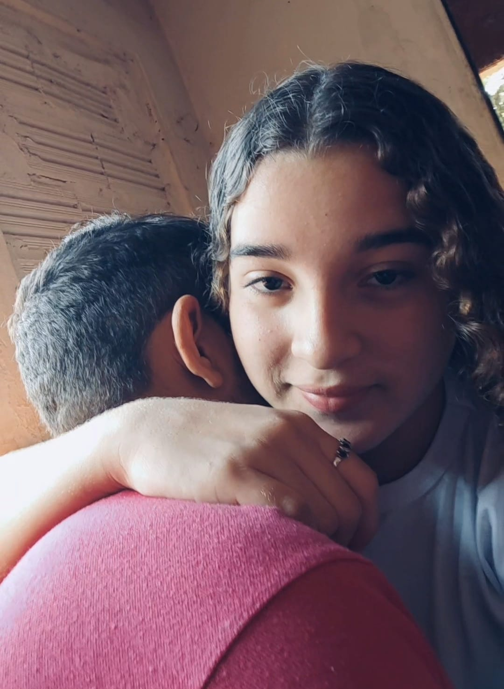

Nossa historia começou no meio de dezembro, mas foi aqui que tudo se tornou realidade.
Cada segundo ao seu lado é o suficiente para provar que a cada dia me apaixono ainda mais. ❤️


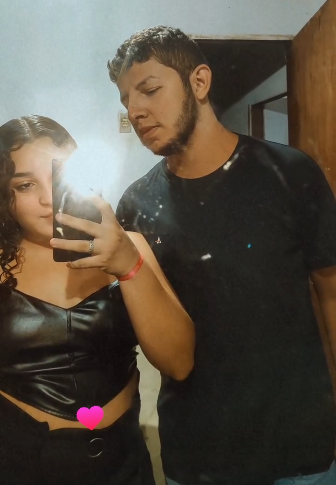

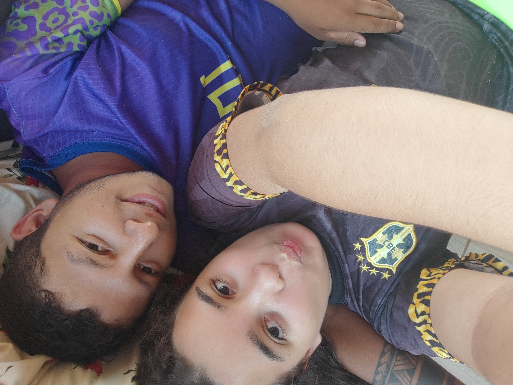
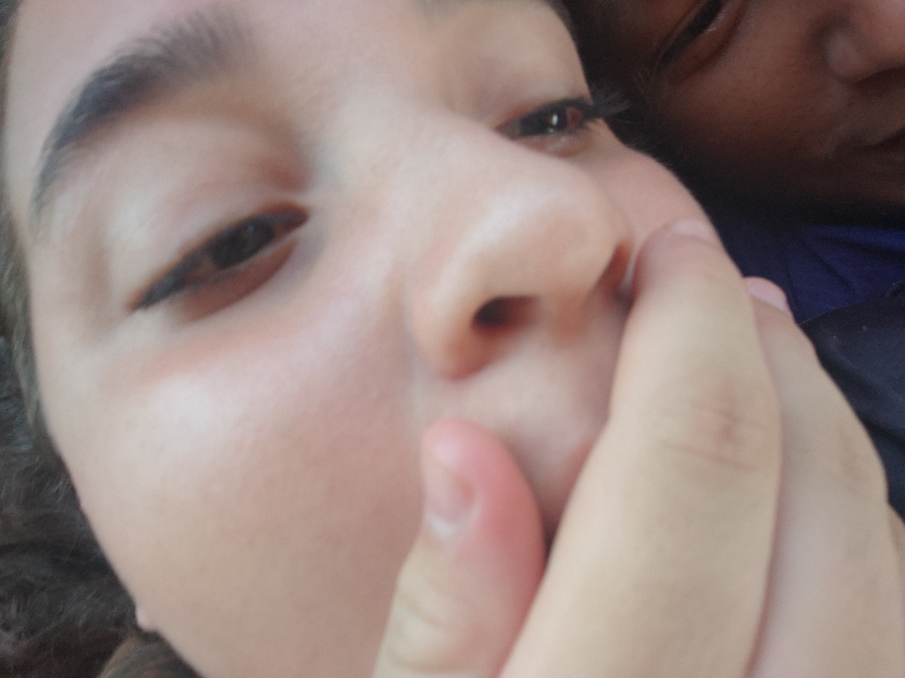
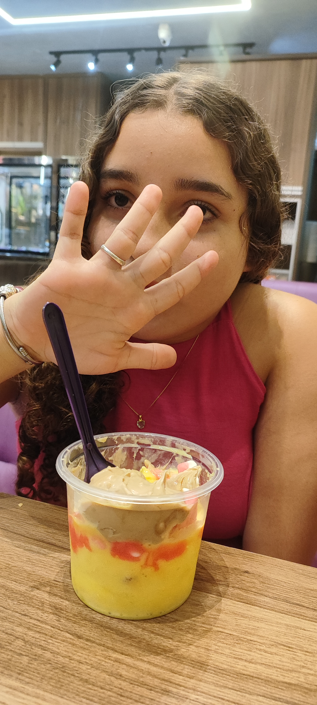
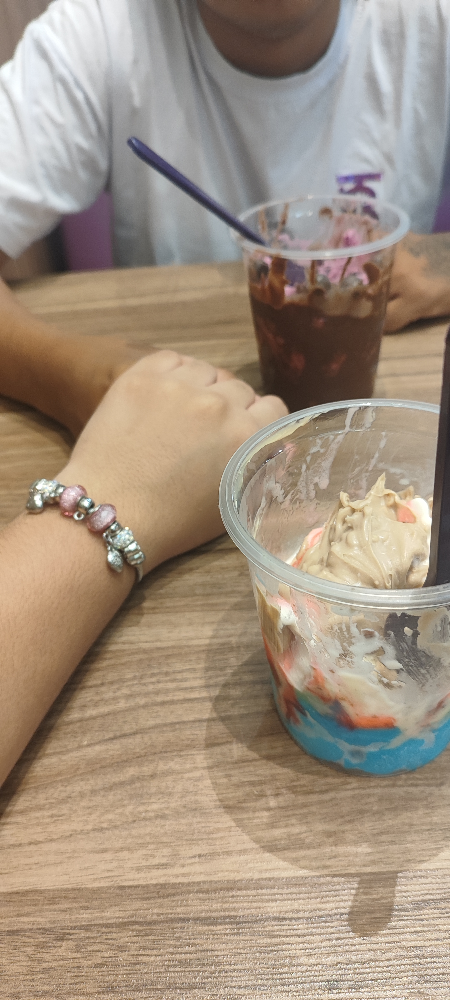
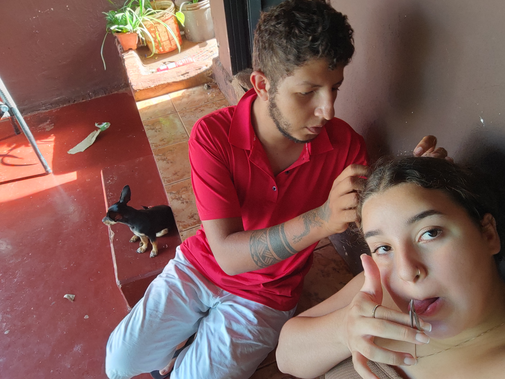


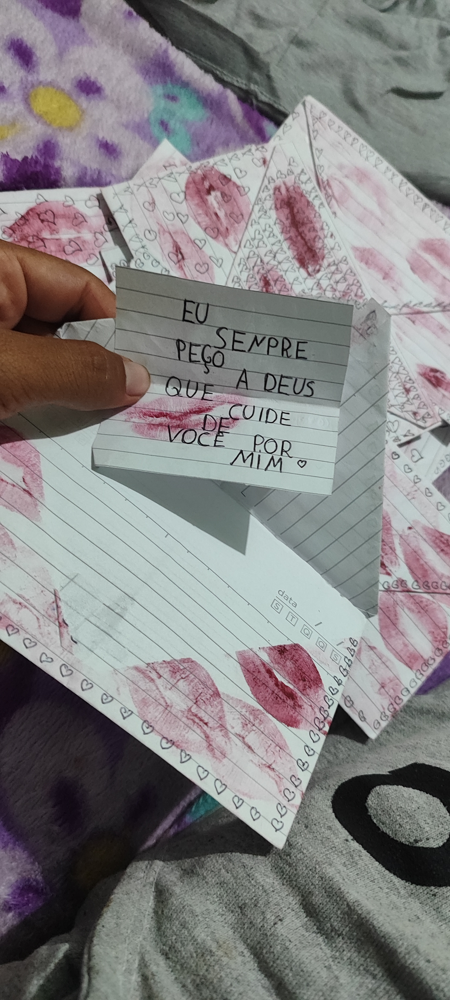
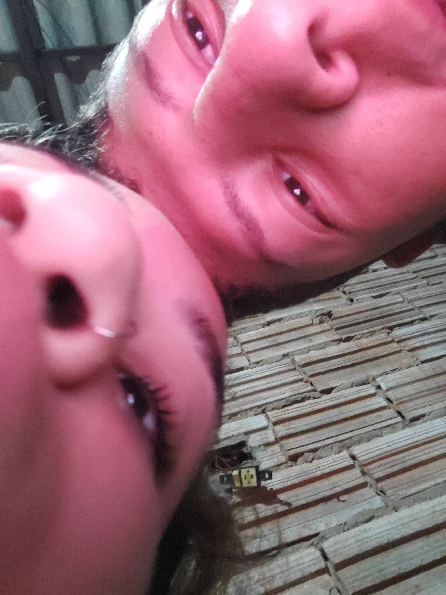
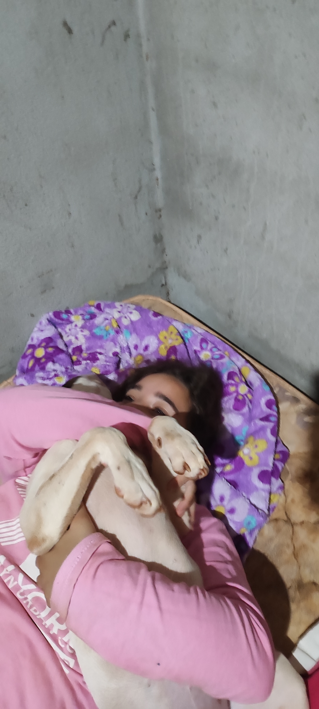
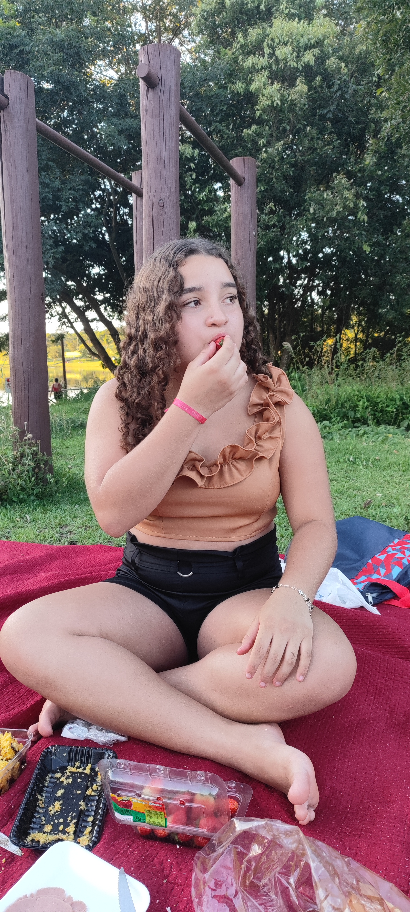
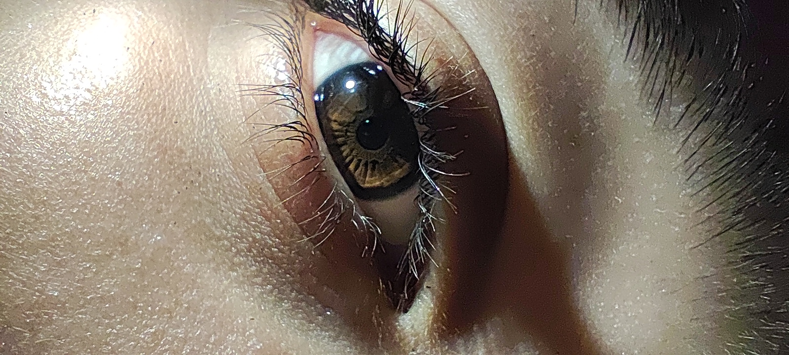
Terminamos mesmo ne? cara que dificil foi pra mim e sinceramente não sou capaz de superar, sou capaz de aceitar e respeitar sua escolha! mas a dor de te perder nunca vai sair do meu peito vou sempre me lembrar desses momentos, das nossas brincadeiras e dos nossos carinhos! no fim tudo que vivemos foi verdadeiro e isso ja é suficiente para levar para a vida toda! você pode não me entender agora, mas futuramente espero estar do seu lado, como amigo, primo e parceiro! aquele cara que independente de quem você for no futuro, estará la para ti! não me entenda mal, não tenho mais esperanças de que a gente volte! vai ser melhor assim então tá tudo bem! mas isso impede de ser seu refugio? me impede de ser teu protetor? para mim não existe essa distancia que estamos tendo! claro que tenho algumas coisas a me acostumar, não sinto mais o teu cheiro antes de dormir, isso doi dms kkkkk tambem não sinto mais a sua presença quando estou com medo, e isso me assusta! mas é passageiro, apesar disso estou muito bem pois quando você precisar de mim, estarei lá! você consegue ser a minha maior escolha e a minha maior dor ao mesmo tempo kkkkkkkkk isso é puro sentimento, que hoje consigo controlar.... mas como eu queria ter conseguido la atrás, quando eu estava com medo de te perder, quando eu estava desesperado por ver a gente não existindo mais kkkkk... quando eu dizia que se eu te perder eu me perco, não menti sabe? ngm sabe ate agr mas o tanto q eu pensei em desistir de viver, eu só queria morrer... mas eu estaria sendo egoista, faria você sofrer mais ainda, então tudo que pude, e o melhor foi seguir em frente, hoje não te vejo mais como minha mulher, mas te enxergo como a Rayane, uma garota que esconde muito o que sente, para não parecer fraca, que luta pelo que quer, que corre atrás da felicidade e vive intensamente, e quando digo intensamente é sobre levar suas vivencias pro coração sem medo! Mesmo assim você é tão forte, mas tbm tão sensivel que me admira. você não precisa de mim para nada, mas eu quero ainda, de alguma forma te proteger, te ajudar quando precisar de alguém e pra mim isso já é mais q suficiente! a minha felicidade vai ser quando você sorrir, vai ser quando estiver feliz, quando encontrar alguém que te trate melhor do que eu, alguém que te faça mais feliz do que eu fui capaz! isso basta! Eu te amo Rayane, e para te amar eu nâo preciso estar contigo, então saiba, eu te amo amo amo amo ❤️❤️❤️❤️ fique bem ai galeguinha!